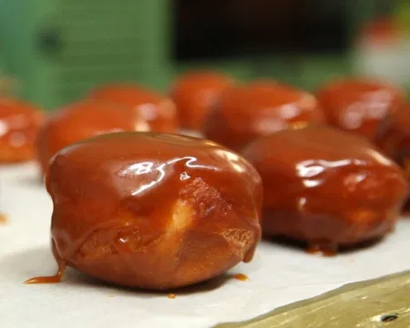

Сатурнови понички с пълнеж от карамел

Начин на проготвяне
- В голяма купа смесете брашното, захарта, солта и маята. Добавете топлото мляко, яйцата и разтопеното масло. Омесете гладко тесто.
- Покрийте тестото и го оставете да втаса за 1 час или докато удвои обема си.
- Разточете тестото до дебелина 1 см и с помощта на чаша изрежете кръгове. Направете малка дупка в средата на всяка поничка.
- Загрейте олиото и изпържете поничките до златисто. Отцедете ги върху кухненска хартия.
- С помощта на шприц или малка лъжичка напълнете поничките с готовия карамелен крем.
- Разтопете белия шоколад и, ако желаете, оцветете го с боя за храна. Изсипете го върху хартия за печене във формата на тънки пръстени. Оставете да се втвърдят.
- Закрепете шоколадовите пръстени върху поничките, за да имитират пръстените на Сатурн.
Меки понички, които са кръгли като планета, поляти с шоколадов вихър.
Сатурн

Факти
- Сатурн е най-леката планета в нашата Слънчева система.
- Тази планета е известна като „газов гигант“. Другите планети, които се класифицират като газови гиганти, са Юпитер, Нептун и Уран.
- Сатурн е втората по големина планета в нашата Слънчева система.
- Пръстените на Сатурн са съставени от парчета скала и лед.
- Ако шофирате със скорост 75 мили (121 км) в час, обиколката на един от пръстените на Сатурн ще ви отнеме 258 дни.
- Ветровете на Сатурн могат да достигнат до 1100 мили в час, което го прави най-ветровитата планета в нашата Слънчева система.
- Тъй като плътността на Сатурн е много ниска, ако успеете да го поставите във вода, той ще плава!
- Сатурн е толкова голям, че Земята може да се побере в него цели 755 пъти!
- Сатурн е два пъти по-далеч от Слънцето, отколкото Юпитер.
- Една година на Сатурн би отнела почти тридесет земни години. Един ден на Сатурн е 10 часа и 39 минути.